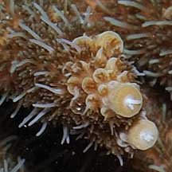
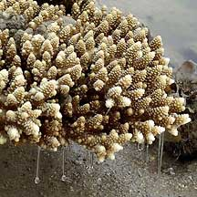
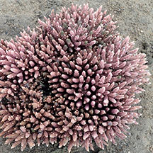
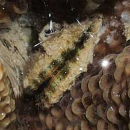

|
|
| hard corals text index | photo index |
| Phylum Cnidaria > Class Anthozoa > Subclass Zoantharia/Hexacorallia > Order Scleractinia > Family Acroporidae |
| Acropora
corals Acropora sp. Family Acroporidae updated Nov 2019 Where seen? These corals can form delicate colonies that resemble miniature underwater forests. They are always a delight to encounter. Sometimes seen on many of our Southern shores, larger colonies are more commonly seen on undisturbed and remote reefs. The genus Acropora has the largest number of species of all the hard corals. The scientific name is usually pronounced as 'ah-crop-or-ah'. Features: Colonies seen usually 15-20cm, but on undisturbed shores can be 50cm or larger. Many grow into branching forms that give rise to common names like 'staghorn coral'. For some, the entire colony often has a flat top so they are sometimes also called 'table-top' or 'table coral'. Others appear bushy. Branches are generally cylindrical with corallites appearing all around the branch. Corallite tiny (0.5cm) smooth cups or tubes. Acropora corals have a distinctive corallite, usually at the tip of the branch, that is larger than the other corallites. This is called an axial corallite. New corallites (called secondary or radial corallites) bud off along the sides while the axial corallite continues to grow upwards on the tip of the branch. The axial corallite lacks zooxanthellae but grows rapidly as it is fed by other areas of the colony. The tips are often white or brightly coloured. Polyps tiny (0.2-0.5cm), with long tapering tentacles. When fully extended, the colony can appear 'furry'. Sometimes mistaken for branching pocilloporid corals (Family Pocilloporidae). There are probably several different species on these pages. It's hard to distinguish them without close examination of small features. On this website, they are grouped by large external features for convenience of display. As a group, acropora corals are adaptable and found in a wide range of habitats from murky waters to wave-pounded areas and some can survive regular exposure at low tide. These protect themselves with a thick mucus coat and UV-absorbing substances. They come in a wide variety of colours. Some acropora corals are rather delicate and will shatter if they are knocked against. So please do not touch them, in fact, we should not touch any living hard corals. |
 Some acropora coral form table-like colonies. Raffles Lighthouse, Jun 07 |
 Corallites with tentacles contracted. Sisters Island, Dec 05 |
 With the tentacles extended, the colony can appear 'furry'. Pulau Semakau, Apr 08 |
| Role in the habitat: Acropora corals are among the important building blocks of a reef. Together with Montipora species, also members of the Family Acroporidae, acropora corals account for one-third of reef-building coral species. Acropora corals include some of the fastest growing hard corals. Their branching forms provide shelter to a wide variety of animals, from small fishes to tiny clams, small crabs to shrimps. |
 Producing mucus to protect themselves. Pulau Semakau, Mar 05 |
 The coral turns pink when stressed. Pulau Semakau, Feb 19 |
 Coral scallop Sisters Island, May 08 |
| Human uses: Acropora corals are
popular in the live aquarium trade and wild colonies are often taken
from the natural reefs to supply this demand. Efforts to breed and
raise acropora corals have been successful and it is hoped this supply
will reduce collection from the wild. Although captive bred acropora
corals are healthier and easier to care for than wild collected specimens,
captive bred corals are more expensive. Status: While a few species are listed as Endangered and Vulnerable, for most there is inadequate information as at 2024 to make an informed assesment of the conservation status of the recorded Acropora corals in Singapore. |
| Some Acropora corals on Singapore shores |


| Acropora coral @ Pulau Hantu 17Apr2010 from SgBeachBum on Vimeo. |
 |
| Acropora
species recorded for Singapore from Checklist of Cnidaria (non-Sclerectinia) Species with their Category of Threat Status for Singapore by Yap Wei Liang Nicholas, Oh Ren Min, Iffah Iesa in G.W.H. Davidson, J.W.M. Gan, D. Huang, W.S. Hwang, S.K.Y. Lum, D.C.J. Yeo, May 2024. The Singapore Red Data Book: Threatened plants and animals of Singapore. 3rd edition. National Parks Board. 663 pp. in red are those listed as threatened in the above.
|
|
Links
References
|